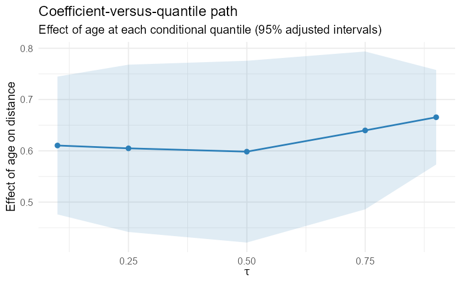
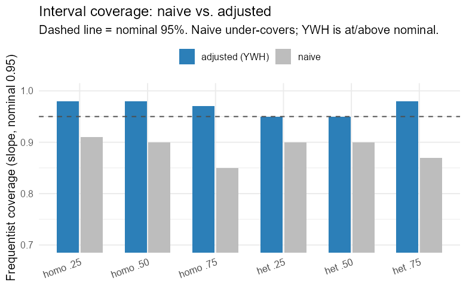
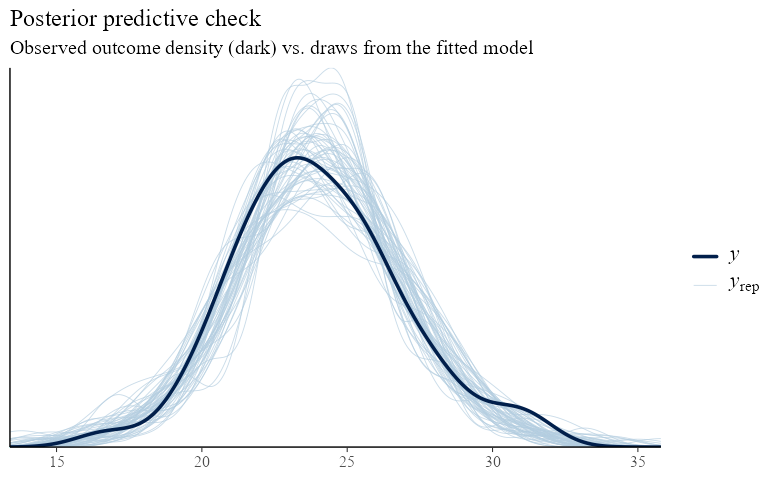

A Primer on Bayesian Multilevel Quantile Regression
Kailas Venkitasubramanian
Source:vignettes/bqmm-primer.Rmd
bqmm-primer.RmdThis primer is written for applied researchers who have data, a question about how a predictor relates to the distribution of an outcome, and clustered or repeated measurements. It explains what Bayesian multilevel quantile regression is, when to reach for it, how to fit and interpret models with bqmm, and — just as important — how to check that the answer can be trusted. You do not need prior exposure to quantile regression or to Stan. Equations appear, but each is introduced in words first.
1. Why model quantiles?
Most regression you have met models the mean of an outcome: “on average, a one-unit change in x moves y by β.” That is often the wrong summary. Three situations recur in practice.
- The spread changes. In growth, income, or biomarker data the variability of the outcome grows with a predictor. A mean model reports one slope; the reality is that the 90th percentile rises far faster than the 10th.
- The tails are the point. Clinicians care about the patients at the high end of a risk marker, not the average patient; ecologists care about minimum river flow, not mean flow. These are questions about quantiles.
- The effect is distributional. A treatment may not shift everyone equally — it may compress the bottom of the distribution while leaving the top alone.
Quantile regression (Koenker 2005) answers these directly. Instead of the mean, it models a chosen conditional quantile — the median (τ = 0.5), the 10th percentile (τ = 0.1), the 90th (τ = 0.9), or a whole grid of them. The coefficient β(τ) is read as: “a one-unit change in x moves the τ-th percentile of y by β(τ).” Sweeping τ from 0 to 1 traces how a predictor reshapes the entire conditional distribution, not just its center.
Why multilevel?
Real data are rarely a single exchangeable sample. Patients are nested in hospitals; measurements are repeated within subjects; students are crossed with schools and neighbourhoods. Ignoring this structure understates uncertainty and discards information. Multilevel (mixed-effects) models add random effects — cluster-specific deviations drawn from a common distribution — so that each cluster borrows strength from the others while keeping its own signature.
Why Bayesian?
A Bayesian treatment delivers full posterior uncertainty for every
quantity (fixed effects, variance components, predictions), handles the
hierarchical shrinkage coherently, and lets you encode prior knowledge.
It also comes with one subtlety specific to quantile regression — the
likelihood is a working approximation — which Section 6 treats
carefully. bqmm is built so that the default settings
handle that subtlety for you.
2. The model in one page
Write the τ-th conditional quantile of the outcome for observation i in cluster j as a linear predictor with fixed and random parts:
Here β(τ) are the fixed effects at
quantile τ (shared across clusters) and u_j are the
random effects for cluster j, drawn from a
mean-zero normal, u_j ~ N(0, Σ). The design vectors
x and z are built from your formula — in
bqmm you write y ~ x + (1 + x | g) exactly as
in lme4.
The estimation trick. Classical quantile regression
minimises the check loss
ρ_τ(u) = u(τ − 1{u < 0}). There is no obvious likelihood
to be Bayesian about — until you notice that minimising the check loss
is equivalent to maximising the likelihood of the
asymmetric Laplace distribution (ALD) (Yu and Moyeed 2001). So bqmm uses
the ALD as a working likelihood:
with a scale σ > 0. The mode/τ-quantile
of this density sits exactly at the linear predictor, which is why
fitting it recovers the quantile regression estimate. Priors complete
the model: weakly-informative normals on β, half-normals on
σ and the random-effect SDs, and (for correlated random
effects) an LKJ prior on the correlation matrix. bqmm
scales these defaults to your data so you rarely need to touch them.
Key idea. The ALD is a device, not a belief about your errors. It makes the quantile estimate computable in a Bayesian framework. Section 6 explains the one place this matters — uncertainty — and how
bqmmcorrects for it.
3. Your first model
We use the orthodontic growth data (nlme::Orthodont):
the distance from the pituitary to the pterygomaxillary fissure,
measured repeatedly on 27 children. Measurements are nested within
Subject.
library(bqmm)
data(Orthodont, package = "nlme")
fit <- bqmm(distance ~ age + (1 | Subject),
data = Orthodont,
tau = 0.5) # the conditional median
summary(fit)summary() reports the fixed effects with their
Yang–Wang–He–adjusted intervals (Section 6), the
random-effect standard deviations, and convergence notes. The familiar
accessors all work:
4. Many quantiles at once
The power of quantile regression is comparison across τ. Pass a vector:
fit_q <- bqmm(distance ~ age + (1 | Subject),
data = Orthodont,
tau = c(0.1, 0.25, 0.5, 0.75, 0.9))
coef(fit_q) # a tau-by-coefficient matrix
plot(fit_q) # coefficient-versus-tau pathsThe coefficient path shows how the age effect changes across the distribution of growth. If the slope rises with τ, older children’s upper percentiles grow faster than their lower ones — a fanning-out the mean model cannot express.

Coefficient-versus-quantile path: the estimated effect of a predictor at each quantile, with uncertainty. A non-flat path is distributional information a mean model discards.
Non-crossing. Fitted quantile curves estimated
separately can cross, which is logically impossible (the 10th percentile
cannot exceed the 90th). bqmm offers a post-hoc fix —
sorting the fitted values across τ (Chernozhukov
et al. 2010):
predict(fit_q, noncrossing = "rearrange")5. Priors and the scale parameter
The defaults are weakly informative and scaled to your response,
chosen to keep the sampler stable rather than to inject information.
Override any of them with bqmm_prior():
my_prior <- bqmm_prior(
beta_sd = 5, # SD of the normal prior on fixed effects
sigma_scale = 1, # half-normal scale for the ALD scale sigma
re_scale = 2, # half-normal scale for random-effect SDs
lkj = 2 # LKJ shape (correlated REs only)
)
fit <- bqmm(distance ~ age + (1 | Subject), Orthodont,
tau = 0.5, prior = my_prior)The ALD scale σ is a nuisance parameter of the working
likelihood. It governs the spread of the working density but is
not the residual SD of your data, and you should not
interpret it as such. Its main job is to be marginalised over;
bqmm’s inference correction (next) removes any dependence
of the reported uncertainty on the precise value of
σ.
6. Getting the uncertainty right
This is the most important section. Because the ALD is a
working likelihood, the naive Bayesian posterior covariance of
the fixed effects is not the correct sampling variance
of the quantile-regression estimator — credible intervals built from it
can badly under- or over-cover (Yang et al.
2016). This is a known, well-understood issue, and
bqmm corrects for it by default.
The correction follows Yang et al. (2016): replace the naive posterior covariance with a sandwich that re-uses the posterior covariance as its “bread” and a score-variance “meat”,
where G is the variance of the ALD working-likelihood
score. Using the posterior covariance as the bread is what makes this
valid for multilevel models: Σ_post already
carries the random-effect contribution to fixed-effect uncertainty, so
the correction keeps it while fixing the misspecified scale. Under
correct specification the correction collapses to ≈ Σ_post,
as it should.
vcov(fit, adjusted = TRUE) # corrected (default)
vcov(fit, adjusted = FALSE) # naive posterior covariance
confint(fit, adjusted = TRUE)
summary(fit) # uses the adjusted intervalsIn simulation across homoscedastic and heteroscedastic two-level
designs, the adjusted intervals cover at or just above the nominal 95%,
whereas the naive intervals under-cover the slopes; see
vignette("bqmm-inference") and the package’s review report.
The take-away for practice:
Report
adjusted = TRUEintervals unless you have a specific reason not to. They are the package’s reason to exist over a generic ALD fit.

Frequentist coverage of nominal-95% intervals across simulated designs: the naive posterior under-covers; the Yang–Wang–He–adjusted intervals are at or above nominal.
7. Correlated random effects
A random intercept and slope are usually correlated —
children who start tall may also grow faster. Model that correlation
with cov = "unstructured":
fit_c <- bqmm(distance ~ age + (1 + age | Subject),
data = Orthodont, tau = 0.5,
cov = "unstructured")
VarCorr(fit_c) # SDs plus...
attr(VarCorr(fit_c), "correlation") # the posterior-median correlation matrixAn LKJ prior (default shape 2, mildly favouring weak correlation) regularises the correlation. Two cautions:
- The covariance is only weakly identified when the random effects are small relative to the noise, or when there are few clusters. If the estimated SDs or correlation look shrunk toward zero, you likely lack the information to estimate them — not a bug. Prefer many clusters.
-
cov = "unstructured"currently supports a single grouping factor. For multiple or crossed terms, usecov = "diagonal"(the default).
8. Diagnostics: is the fit trustworthy?
A posterior you cannot trust is worse than no posterior. Always check:
Sampler convergence. bqmm surfaces
warnings automatically — split-R̂ above 1.01, low effective sample size,
or divergent transitions. Treat any of these as a stop sign. The usual
fixes:
fit <- bqmm(distance ~ age + (1 | Subject), Orthodont, tau = 0.5,
chains = 4, iter = 4000,
control = list(adapt_delta = 0.99, max_treedepth = 12))Raising adapt_delta toward 0.99 and increasing
iter cures most divergences and low-ESS warnings; variance
and correlation parameters are the slowest to mix and benefit most.
Inspect them with the posterior and bayesplot
ecosystems:
library(posterior)
summarise_draws(as_draws(fit)) # R-hat, ESS per parameter
library(bayesplot)
mcmc_trace(as_draws(fit), regex_pars = "b_")Posterior predictive checks. Does the fitted model generate data that look like yours? Overlay replicated datasets on the observed outcome:
yrep <- posterior_predict(fit) # draws x observations
bayesplot::ppc_dens_overlay(Orthodont$distance, yrep[1:50, ])
Posterior predictive check: the observed outcome density (dark) against draws from the fitted model (light). Systematic mismatch flags a misfit the quantile of interest may not capture.
Non-crossing. When fitting several τ, confirm the
fitted quantiles are monotone (or enforce it with
noncrossing = "rearrange").
9. Visualising results
Three plots carry most of the message:
-
Coefficient-versus-τ paths (
plot()on a multi-quantile fit) — the headline distributional story. - Fitted quantile curves over a predictor grid, optionally rearranged, to show the conditional distribution fanning across the data.
-
Posterior predictive overlays
(
ppc_dens_overlay) and parameter intervals (bayesplot::mcmc_areas(as_draws(fit))) for fit and uncertainty.
Because as_draws() exposes the fit to the whole
posterior/bayesplot stack, any plot in those
packages is available with tidy parameter names
(b_<coef>, sd_<component>,
sigma).
10. Practical guidance and pitfalls
- Clusters, not just observations. Random-effect variances and correlations need many groups (rule of thumb: ≥ 20–30) to be estimable. A handful of large clusters is not enough.
-
Extreme quantiles need more data. τ = 0.05 or 0.95
are estimated from the sparse tail; expect wider intervals and harder
sampling. Raise
adapt_delta. - Scale your predictors. Centring and scaling continuous predictors improves sampling geometry and makes priors easier to set.
-
Diagonal vs unstructured. Start with
cov = "diagonal". Move to"unstructured"only when you have one grouping factor, enough clusters, and a substantive reason to expect correlated random effects. -
cores > 1parallelises chains; on some systems the package must be on the default library path for the parallel workers to find it.cores = 1always works. - Report the quantile(s) modelled, the adjusted intervals, the random-effect SDs (and correlations), and your convergence diagnostics.
11. How bqmm relates to other tools
-
lqmm,qrLMM— frequentist quantile mixed models; excellent point estimation, no posterior.bqmm’s fixed-effect estimates agree closely withlqmm. -
brms(asym_laplace) — can fit a multilevel ALD model, but with a fixed quantile, an awkward scale, and uncorrected (invalid) intervals.bqmm’s reason to exist is the corrected inference and a quantile-first interface. -
bayesQR,Brq— Bayesian quantile regression without random effects.